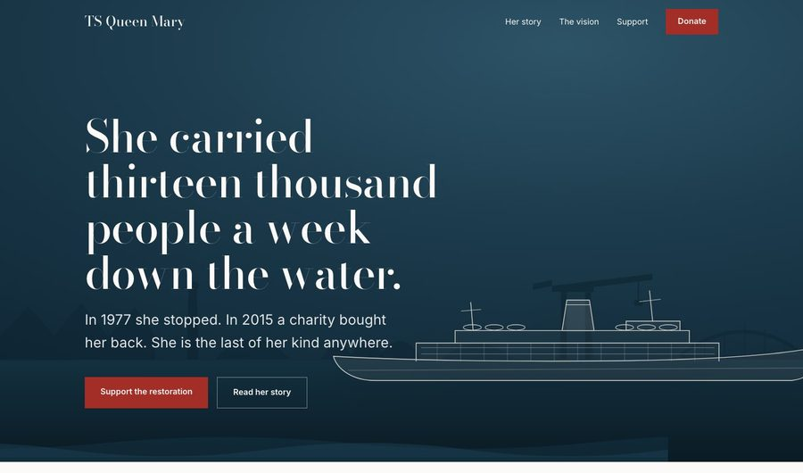
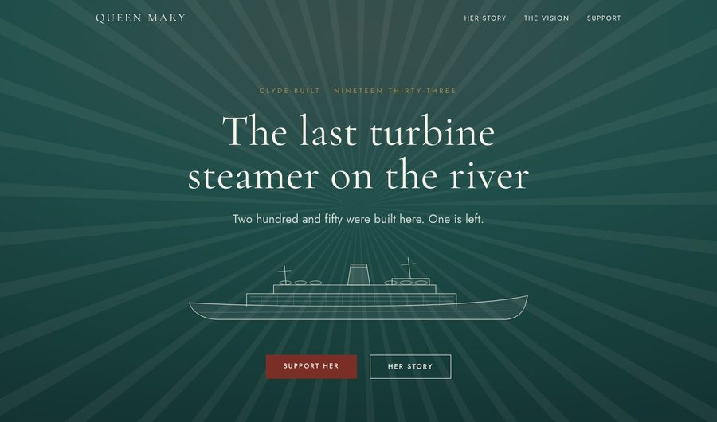
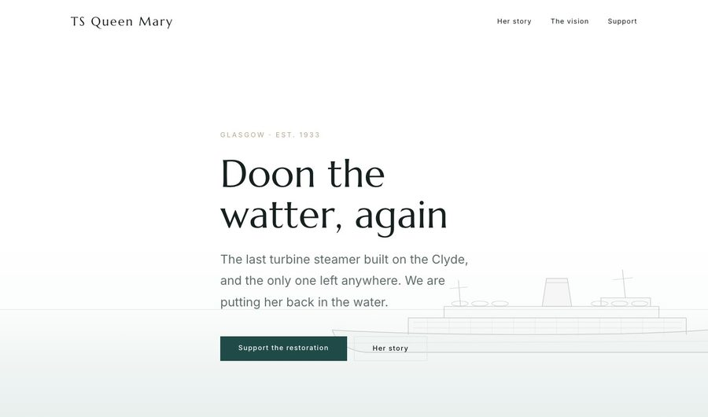
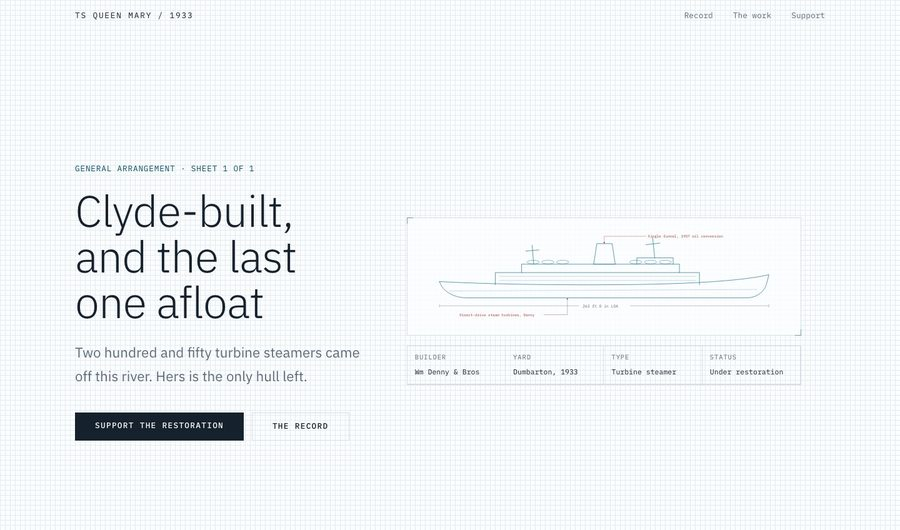
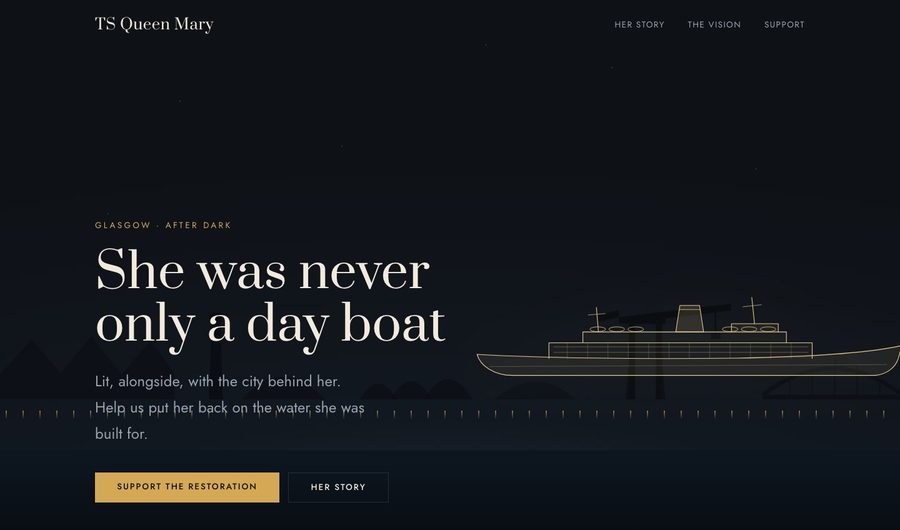
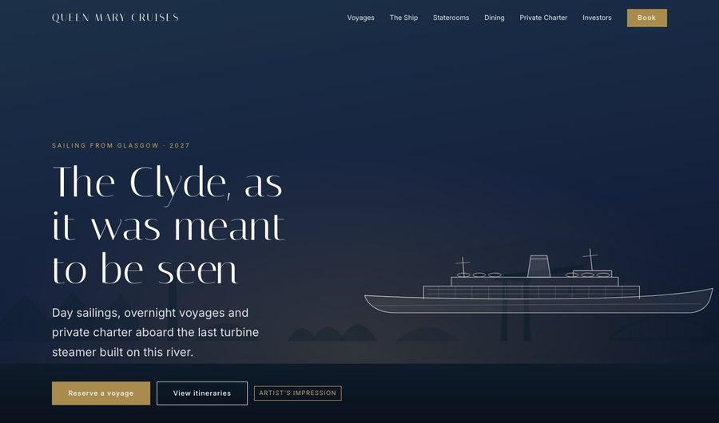

Editorial heritage
Draught
The most restrained of the six. Everything structural is borrowed from the ship: the timeline numerals are draught marks, the section rule is a waterline, and the fundraising total is a hull filling with water.
Open this one →
Interwar travel poster
Brass & Bone
Centred and ceremonial where Draught is asymmetric. The page is built on a vertical axis like a 1930s liner poster, with a sunburst behind her funnel and the appeal total engraved on a brass plate.
Open this one →
Light and air
Tidewater
The closest of the six to the Belmond site you sent. Almost entirely white, with the sea present everywhere as a wash and nowhere as a block. The fundraising total is a tide coming in across the page.
Open this one →
The drawing office
Blueprint
The biggest departure, and the most specifically hers. Graph paper, a general arrangement drawing whose lines draw themselves, annotation leaders and a title block. She is a piece of Clyde engineering, and this says so.
Open this one →
The evening sailing
Nocturne
The counter-proposal to crisp white, included to show the range. The argument for it is specific: an evening charter is a product the operating company will actually sell, and it does not photograph well on white.
Open this one →
The operating company · for investors
Queen Mary Cruises
The one you asked to be able to put in front of VCs. The menu is the Cunard and Belmond structure — Voyages, The Ship, Staterooms, Dining, Private Charter — because an investor reads a navigation before they read a word.
It includes a booking system that works. Choose a voyage, a date, a stateroom and guests, and watch the price build line by line. Children are half fare. Confirm it and you get a booking reference. Nothing is charged and nothing leaves your browser — but it answers the question an investor always asks, which is what a customer actually sees.
There is also an investor section with the revenue model, and every forward-looking image is labelled an artist’s impression.
Open the commercial site →